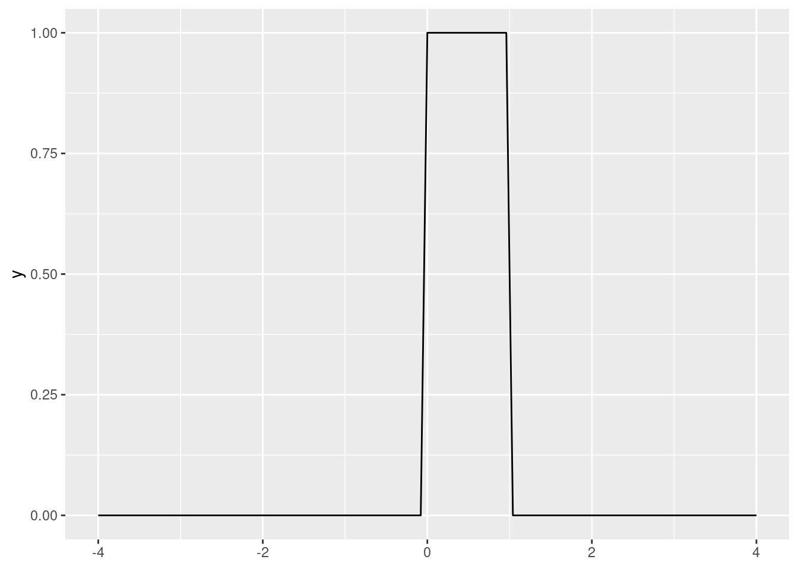
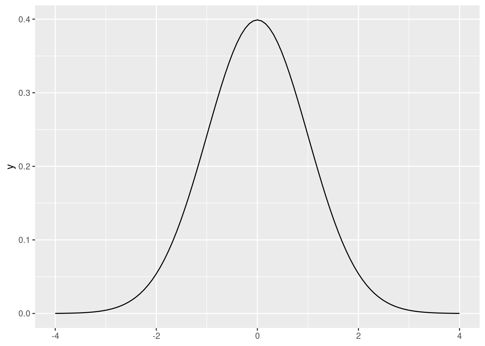
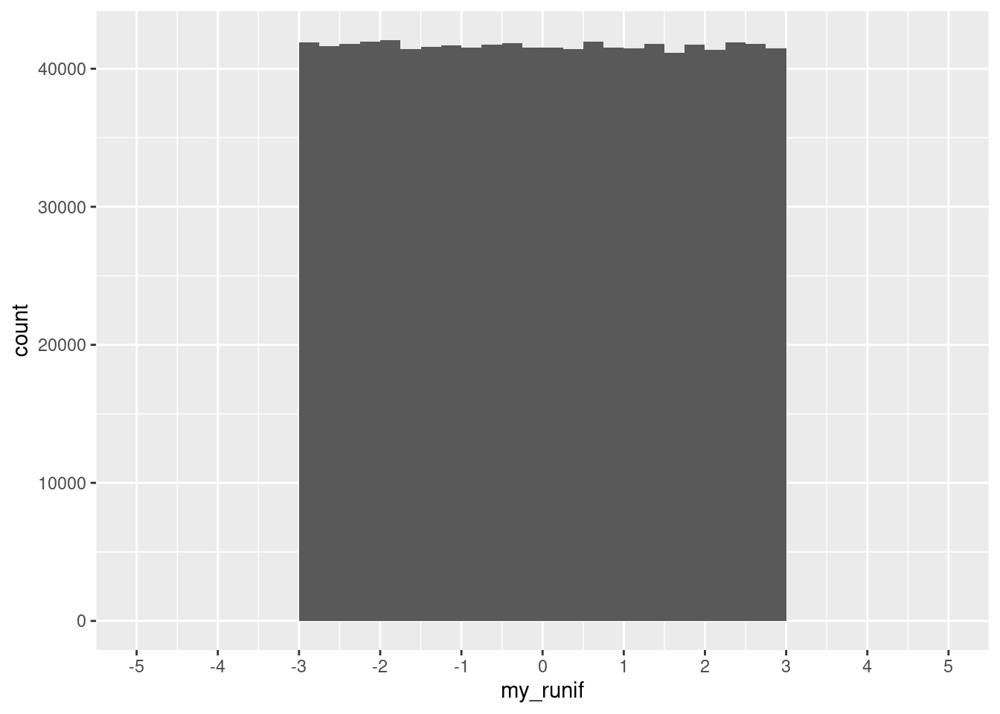
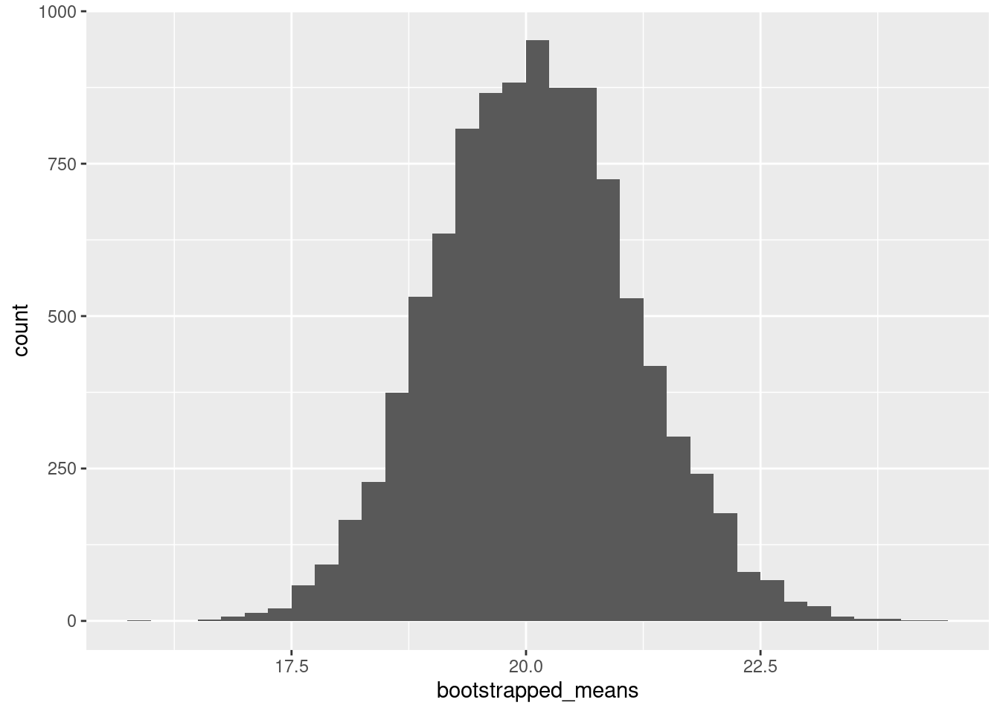

dbinom(x = 0, size = 100, prob = 0.02)[1] 0.1326196Joint probability: \(P(A \cap B)\). The probability that the two events will occur in one realization of the experiment.
Law of total probability: \(P(A) = P(A \cap B) + P(A \cap B^C)\).
Addition rule: \(P(A \cup B) = P(A) + P(B) - P (A \cap B)\).
Conditional probability: \(\displaystyle P(A|B)=\frac{P(A \cap B)}{P(B)}\)
Bayes theorem: \(\displaystyle P(A|B) = \frac{P(A) \cdot P(B|A)}{P(B)}\)
Random variables are functions (\(X: \Omega \to \mathbb{R}\)) of the outcome of a random generative process. Informally, they are “placeholders” for whatever will be the output of a process we’re studying.
Probability distributions describe how the random variable assigns probabilities to outcomes.
Random variables (and probability distributions) can be discrete or continuous.
A sample space in which there are a (finite or infinite) countable number of outcomes
Each realization of random process has a discrete probability of occurring.
What’s the probability that we’ll roll a 3 on one die roll: \[Pr(y=3) = \dfrac{1}{6}\]
If one roll of the die is an “experiment,” we can think of a 3 as a “success.”
\(Y \sim Bernoulli \left(\frac{1}{6} \right)\)
Fair coins are \(\sim Bernoulli(.5)\), for example.
More generally, \(Bernoulli(\pi )\). We’ll talk about other probability distributions soon.
Let’s do another example on the board, using the sum of two fair dice.
Probability of each occurrence encoded in probability mass function (PMF)
There are many useful probability distributions. In this section we will cover three of the most common ones: the binomial, uniform, and normal distributions.
A Binomial distribution is defined as follow: \(X \sim Binomial(n, p)\)
PMF:
\[ {n \choose k} p^k(1-p)^{n-k} \] , where \(n\) is the number of trials, \(p\) is the probability of success, and \(k\) is the number of successes.
Remember that:
\[ {n \choose k} = \frac{n!}{k!(n-k)!} \]
For example, let’s say that voters choose some candidate with probability 0.02. What is the probability of seeing exactly 0 voters of the candidate in a sample of 100 people?
We can compute the PMF of a binomial distribution using R’s dbinom() function.
dbinom(x = 0, size = 100, prob = 0.02)[1] 0.1326196dbinom(x = 1, size = 100, prob = 0.02)[1] 0.2706522Similarly, we can compute the CDF using R’s pbinom() function:
pbinom(q = 0, size = 100, prob = 0.02)[1] 0.1326196pbinom(q = 100, size = 100, prob = 0.02)[1] 1pbinom(q = 1, size = 100, prob = 0.02)[1] 0.4032717Compute the probability of seeing between 1 and 10 voters of the candidate in a sample of 100 people.
A uniform distribution has two parameters: a minimum and a maximum. So \(X \sim U(a, b)\).
\[ \displaystyle{ \begin{cases} \frac{1}{b-a} & \text{, }{x \in [a, b]}\\ 0 & \text{, otherwise} \end{cases} } \]
\[ \displaystyle{ \begin{cases} 0 & \text{, }{x < a}\\ \frac{x-a}{b-a} & \text{, }{x \in [a, b]}\\ 1 & \text{, }{x>b} \end{cases} } \]
In R, dunif() gives the PDF of a uniform distribution. By default, it is \(X \sim U(0, 1)\).
library(tidyverse)ggplot() +
stat_function(fun = dunif, xlim = c(-4, 4))
Meanwhile, punif() evaluates the CDF of a uniform distribution.
punif(q = .3)[1] 0.3Evaluate the CDF of \(Y \sim U(-2, 2)\) at point \(y = 1\). Use the formula and punif().
A normal distribution has two parameters: a mean and a standard deviation. So \(X \sim N(\mu, \sigma)\).
In R, dnorm() gives us the PDF of a standard normal distribution (\(Z \sim N(0, 1)\)):
ggplot() +
stat_function(fun = dnorm, xlim = c(-4, 4))
Like you might expect, pnorm() computes the CDF of a normal distribution (by default, the standard normal).
pnorm(0)[1] 0.5pnorm(1) - pnorm(-1)[1] 0.6826895What is the probability of obtaining a value above 1.96 or below -1.96 in a standard normal probability distribution? Hint: use the pnorm() function.
The problems considered by probability and statistics are inverse to each other. In probability theory we consider some underlying process which has some randomness or uncertainty modeled by random variables, and we figure out what happens. In statistics we observe something that has happened, and try to figure out what underlying process would explain those observations. (quote attributed to Persi Diaconis)
In statistics we try to learn about a data-generating process (DGP) using our observed data. Example: GDP statistics.
Usually we are restrained to samples, while our DGPs of interest are population-based.
Statistics has two main targets:
We use an estimator (\(\hat\theta\)), which is a function that summarizes data, as guess about a parameter \(\theta\).
Theoretical statistics is all about finding “good” estimators (let’s see an example of different estimators). A few properties of good estimators:
Applied statistics is about using these techniques reasonably in messy real-world situations…
Before we jump into an example, we’ll review some R tools that will build up to simulations.
In this module we will work with good ol’ mtcars, one of R’s most notable default datasets. We’ll assign it to an object so it shows in our Environment pane:
my_mtcars <- mtcarsDefault datasets such as mtcars and iris are useful because they are available to everyone, and once you become familiar with them, you can start thinking about the code instead of the intricacies of the data. These qualities also make default datasets ideal for building reproducible examples (see Wickham 2014)
We can use the function sample() to obtain random values from a vector. The size = argument specifies how many values we want. For example, let’s get one random value of the “mpg” column:
sample(my_mtcars$mpg, size = 1)[1] 14.7Every time we run this command, we can get a different result:
sample(my_mtcars$mpg, size = 1)[1] 24.4sample(my_mtcars$mpg, size = 1)[1] 15.2In some occasions we do want to get the same result consistently after running some random process multiple times. In this case, we set a seed, which takes advantage of R’s pseudo-random number generator capabilities. No matter how many times we run the following code block, the result will be the same:
set.seed(123)
sample(my_mtcars$mpg, size = 1)[1] 15Sampling with replacement means that we can get the same value multiple times. For example:
set.seed(12)
sample(c("Banana", "Apple", "Orange"), size = 3, replace = T)[1] "Apple" "Apple" "Orange"sample(my_mtcars$mpg, size = 100, replace = T) [1] 26.0 15.2 18.7 18.7 30.4 21.0 24.4 26.0 32.4 15.8 32.4 19.2 18.1 16.4 19.2
[16] 27.3 14.3 10.4 17.3 13.3 21.4 13.3 19.2 24.4 15.0 27.3 17.8 15.2 15.8 14.3
[31] 19.7 16.4 18.7 15.8 19.2 21.0 14.3 15.2 14.3 27.3 21.4 33.9 33.9 21.4 30.4
[46] 33.9 21.4 17.3 17.3 10.4 26.0 18.7 15.2 30.4 10.4 10.4 15.5 14.3 26.0 17.3
[61] 33.9 26.0 24.4 18.7 30.4 32.4 21.5 30.4 15.2 27.3 13.3 17.3 21.4 24.4 13.3
[76] 22.8 33.9 13.3 21.5 14.3 19.2 30.4 24.4 26.0 15.8 10.4 24.4 14.3 15.2 10.4
[91] 19.2 21.0 16.4 19.2 24.4 19.7 18.7 10.4 18.7 17.8In order to sample not from a vector but from a data frame’s rows, we can use the slice_sample() function from dplyr:
my_mtcars |>
slice_sample(n = 2) # a number of rows mpg cyl disp hp drat wt qsec vs am gear carb
Dodge Challenger 15.5 8 318 150 2.76 3.52 16.87 0 0 3 2
Datsun 710 22.8 4 108 93 3.85 2.32 18.61 1 1 4 1my_mtcars |>
slice_sample(prop = 0.5) # a proportion of rows mpg cyl disp hp drat wt qsec vs am gear carb
Toyota Corolla 33.9 4 71.1 65 4.22 1.835 19.90 1 1 4 1
Ferrari Dino 19.7 6 145.0 175 3.62 2.770 15.50 0 1 5 6
Merc 450SE 16.4 8 275.8 180 3.07 4.070 17.40 0 0 3 3
Hornet Sportabout 18.7 8 360.0 175 3.15 3.440 17.02 0 0 3 2
Maserati Bora 15.0 8 301.0 335 3.54 3.570 14.60 0 1 5 8
Datsun 710 22.8 4 108.0 93 3.85 2.320 18.61 1 1 4 1
Ford Pantera L 15.8 8 351.0 264 4.22 3.170 14.50 0 1 5 4
Dodge Challenger 15.5 8 318.0 150 2.76 3.520 16.87 0 0 3 2
Merc 280 19.2 6 167.6 123 3.92 3.440 18.30 1 0 4 4
Lincoln Continental 10.4 8 460.0 215 3.00 5.424 17.82 0 0 3 4
Valiant 18.1 6 225.0 105 2.76 3.460 20.22 1 0 3 1
Fiat 128 32.4 4 78.7 66 4.08 2.200 19.47 1 1 4 1
Mazda RX4 Wag 21.0 6 160.0 110 3.90 2.875 17.02 0 1 4 4
Merc 240D 24.4 4 146.7 62 3.69 3.190 20.00 1 0 4 2
Camaro Z28 13.3 8 350.0 245 3.73 3.840 15.41 0 0 3 4
Cadillac Fleetwood 10.4 8 472.0 205 2.93 5.250 17.98 0 0 3 4Again, we can also use seeds here to ensure that we’ll get the same result each time:
set.seed(123)
my_mtcars |>
slice_sample(prop = 0.5) mpg cyl disp hp drat wt qsec vs am gear carb
Maserati Bora 15.0 8 301.0 335 3.54 3.570 14.60 0 1 5 8
Cadillac Fleetwood 10.4 8 472.0 205 2.93 5.250 17.98 0 0 3 4
Honda Civic 30.4 4 75.7 52 4.93 1.615 18.52 1 1 4 2
Merc 450SLC 15.2 8 275.8 180 3.07 3.780 18.00 0 0 3 3
Datsun 710 22.8 4 108.0 93 3.85 2.320 18.61 1 1 4 1
Merc 280 19.2 6 167.6 123 3.92 3.440 18.30 1 0 4 4
Fiat 128 32.4 4 78.7 66 4.08 2.200 19.47 1 1 4 1
Dodge Challenger 15.5 8 318.0 150 2.76 3.520 16.87 0 0 3 2
Merc 280C 17.8 6 167.6 123 3.92 3.440 18.90 1 0 4 4
Hornet Sportabout 18.7 8 360.0 175 3.15 3.440 17.02 0 0 3 2
Toyota Corolla 33.9 4 71.1 65 4.22 1.835 19.90 1 1 4 1
Ford Pantera L 15.8 8 351.0 264 4.22 3.170 14.50 0 1 5 4
AMC Javelin 15.2 8 304.0 150 3.15 3.435 17.30 0 0 3 2
Ferrari Dino 19.7 6 145.0 175 3.62 2.770 15.50 0 1 5 6
Merc 230 22.8 4 140.8 95 3.92 3.150 22.90 1 0 4 2
Lotus Europa 30.4 4 95.1 113 3.77 1.513 16.90 1 1 5 2And we can also sample with replacement:
set.seed(123)
my_mtcars |>
slice_sample(prop = 1, replace = T) mpg cyl disp hp drat wt qsec vs am gear carb
Maserati Bora 15.0 8 301.0 335 3.54 3.570 14.60 0 1 5 8
Cadillac Fleetwood 10.4 8 472.0 205 2.93 5.250 17.98 0 0 3 4
Honda Civic...3 30.4 4 75.7 52 4.93 1.615 18.52 1 1 4 2
Merc 450SLC...4 15.2 8 275.8 180 3.07 3.780 18.00 0 0 3 3
Datsun 710...5 22.8 4 108.0 93 3.85 2.320 18.61 1 1 4 1
Merc 280...6 19.2 6 167.6 123 3.92 3.440 18.30 1 0 4 4
Fiat 128 32.4 4 78.7 66 4.08 2.200 19.47 1 1 4 1
Dodge Challenger...8 15.5 8 318.0 150 2.76 3.520 16.87 0 0 3 2
Merc 280C 17.8 6 167.6 123 3.92 3.440 18.90 1 0 4 4
Hornet Sportabout...10 18.7 8 360.0 175 3.15 3.440 17.02 0 0 3 2
Toyota Corolla 33.9 4 71.1 65 4.22 1.835 19.90 1 1 4 1
Merc 450SLC...12 15.2 8 275.8 180 3.07 3.780 18.00 0 0 3 3
Dodge Challenger...13 15.5 8 318.0 150 2.76 3.520 16.87 0 0 3 2
Pontiac Firebird...14 19.2 8 400.0 175 3.08 3.845 17.05 0 0 3 2
Fiat X1-9...15 27.3 4 79.0 66 4.08 1.935 18.90 1 1 4 1
Porsche 914-2...16 26.0 4 120.3 91 4.43 2.140 16.70 0 1 5 2
Volvo 142E 21.4 4 121.0 109 4.11 2.780 18.60 1 1 4 2
Hornet Sportabout...18 18.7 8 360.0 175 3.15 3.440 17.02 0 0 3 2
Honda Civic...19 30.4 4 75.7 52 4.93 1.615 18.52 1 1 4 2
Porsche 914-2...20 26.0 4 120.3 91 4.43 2.140 16.70 0 1 5 2
Pontiac Firebird...21 19.2 8 400.0 175 3.08 3.845 17.05 0 0 3 2
Lotus Europa 30.4 4 95.1 113 3.77 1.513 16.90 1 1 5 2
Pontiac Firebird...23 19.2 8 400.0 175 3.08 3.845 17.05 0 0 3 2
Merc 230...24 22.8 4 140.8 95 3.92 3.150 22.90 1 0 4 2
Ford Pantera L 15.8 8 351.0 264 4.22 3.170 14.50 0 1 5 4
Datsun 710...26 22.8 4 108.0 93 3.85 2.320 18.61 1 1 4 1
Merc 240D 24.4 4 146.7 62 3.69 3.190 20.00 1 0 4 2
Fiat X1-9...28 27.3 4 79.0 66 4.08 1.935 18.90 1 1 4 1
Duster 360 14.3 8 360.0 245 3.21 3.570 15.84 0 0 3 4
Merc 280...30 19.2 6 167.6 123 3.92 3.440 18.30 1 0 4 4
Merc 230...31 22.8 4 140.8 95 3.92 3.150 22.90 1 0 4 2
Ferrari Dino 19.7 6 145.0 175 3.62 2.770 15.50 0 1 5 6We can also draw sample numbers from theoretical distributions.
For the uniform distribution, the arguments specify how many draws we want and the boundaries
runif(n = 20, min = -3, max = 3) [1] 1.1442317 1.7728045 -2.8523179 -0.1332242 1.5507572 -1.7015524
[7] -1.0909140 -1.6102453 -2.1431999 -0.5127220 -0.5176540 -0.7869273
[13] -2.0853315 -2.1671636 -1.6017954 -0.2042253 -1.4041642 2.1469663
[19] -2.7250130 -0.3467996When we draw a million times from the distribution, we can then plot it and see that it does look as we would expect:
set.seed(123)
my_runif <- runif(n = 1000000, min = -3, max = 3)ggplot(data.frame(my_runif), aes(x = my_runif)) +
geom_histogram(binwidth = 0.25, boundary = 0, closed = "right") +
scale_x_continuous(breaks = seq(-5, 5, 1), limits = c(-5, 5))
For the binomial distribution, we can specify the number of draws, how many trials each draw will have, and the probability of success.
For instance, we can ask R to do the following twenty times: flip a fair coin one hundred times, and count the number of tails.
rbinom(n = 20, size = 100, prob = 0.5) [1] 48 45 54 50 58 50 42 58 48 57 53 49 52 51 49 40 57 53 52 41With prob = , we can implement unfair coins:
rbinom(n = 20, size = 100, prob = 0.9) [1] 88 87 93 95 93 92 91 94 87 91 90 92 93 89 90 95 91 90 86 88For the Normal or Gaussian distribution, we specify the number of draws, the mean, and standard deviation:
rnorm(n = 20, mean = 0, sd = 1) [1] 1.10455864 0.06386693 -1.59684275 1.86298270 -0.90428935 -1.55158044
[7] 1.27986282 -0.32420495 -0.70015076 2.17271578 0.89778913 -0.01338538
[13] -0.74074395 0.36772316 -0.66453402 -1.11498344 -1.15067439 -0.55098894
[19] 0.10503154 -0.27183645Compute and plot my_rnorm, a vector with one million draws from a Normal distribution \(Z\) with mean equal to zero and standard deviation equal to one (\(Z\sim N(0,1)\)). You can recycle code from what we did for the uniform distribution!
Loops allow us to repeat operations in R. The most common construct is the for-loop:
for (i in 1:10){
print(i)
}[1] 1
[1] 2
[1] 3
[1] 4
[1] 5
[1] 6
[1] 7
[1] 8
[1] 9
[1] 10We talked about loops and various extensions in one of our methods workshops last year: Speedy R.
Bootstrap (and its relatives) is one way in which we can do inference. We’ll go through the intuition on the board.
bootstrapped_means <- vector(mode = "numeric", length = 10000)
for (i in 1:10000){
m <- my_mtcars |> slice_sample(prop = 1, replace = T)
bootstrapped_means[i] <- mean(m$mpg)
}ggplot(data.frame(bootstrapped_means), aes(x = bootstrapped_means)) +
geom_histogram(binwidth = 0.25, boundary = 0, closed = "right")
This is sometimes called the frequentist interpretation of probability. There are other possibilities, such as Bayesian interpretations of probability, which describe probabilities as degrees of belief.↩︎